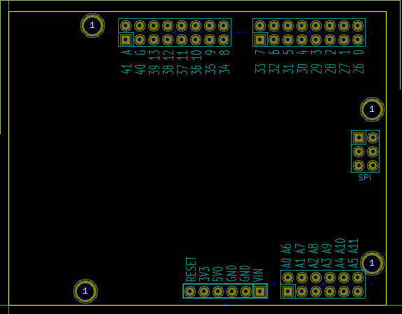

This project provides the base template to create a shield for use with a Microchip ChipKIT(TM) uC32 development board or a Microchip ChipKIT(TM) Uno32 development board.
The following connectors should be used with the shield for connection with the development board:
The board outline looks like the following:

(c)2013 Ian McInerney